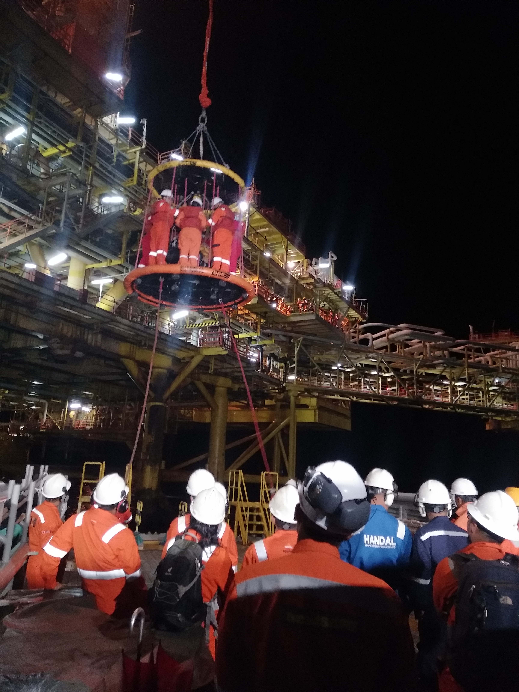
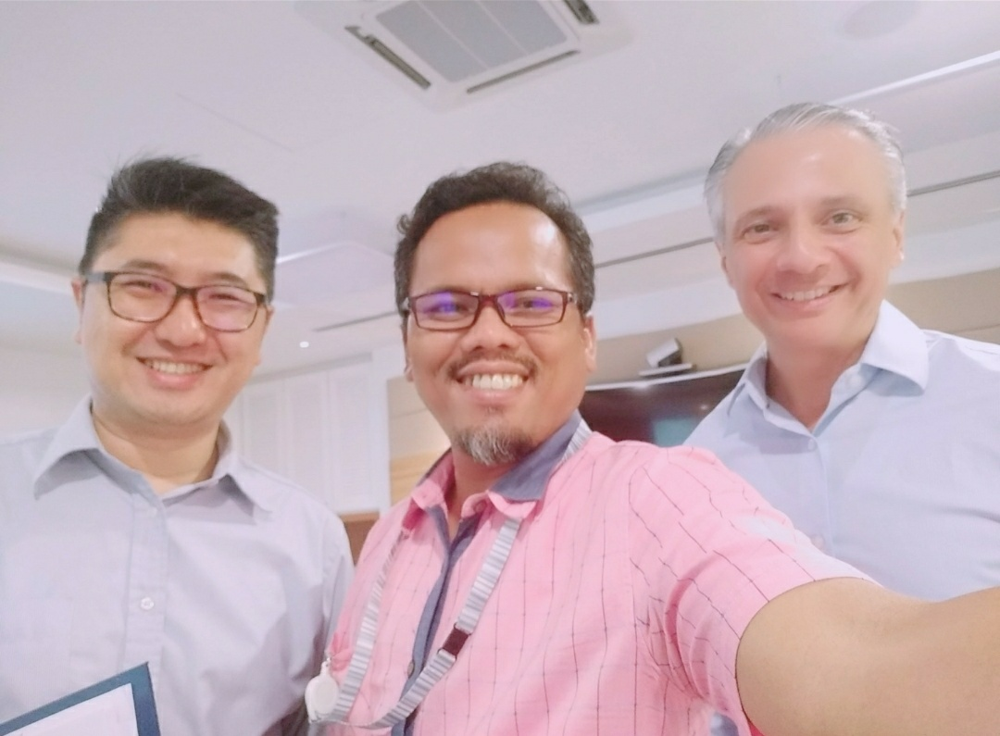

|
A Short Life Carry An Infnite Moment.
Too Complicated To Tell.
Too Long To Write.
Even Picture Is Not Enough.

Assalamualaikum dan Sejahtera, my name is Wan Kamarudin and allow me to give a brief introduction about myself. I have number of interests but I would say the significants are sport, art, and music. Charity work and helping others bringging sense of joy that words cannot describe. The smile crafted from their face is worthless.
Challenges bring difficulities and some time associate with pain..but it is part of life. Pain and Gain are determined to be bounded. Satisfaction and compleasent are enemies for any person who wants to improve and peruing their goals. Oppurtunity do not happen.. it is created. Achievement is combination of hard work and pray.
Travel is useful; it exercises the imagination. All the rest is disappointment and fatigue. Our journey is entirely imaginary. That is its strength - Louis-Ferdinand Céline's.
Don't tell everyone your plans, instead show them your results

PURSUING DEGREE
2021-Present
Universiti Teknologi MARA, UiTM, Kampus Kota Bharu, Cawangan Kelantan
Bachelor of Business Administration (Hons.) Finance
|